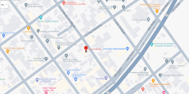

História
Águas cristalinas, profundidade desconhecida, visibilidade de mais de 40 metros, passeios de flutuação e mergulho. Estas são atrações da Lagoa Misteriosa, atrativo localizado em Jardim (MS), que encantam visitantes do mundo todo e proporcionam uma experiência única junto à natureza. A Lagoa Misteriosa impressiona por sua incrível transparência e pelos diferentes tons de azul. Tanta nitidez deve-se à presença de rochas calcárias que sedimentam as impurezas, tornando a água da região extremamente cristalina. A 40 metros de profundidade é possível ver a copa das árvores que contornam o local.
Paisagem
Águas cristalinas, profundidade desconhecida, visibilidade de mais de 40 metros, passeios de flutuação e mergulho. Estas são atrações da Lagoa Misteriosa, atrativo localizado em Jardim (MS), que encantam visitantes do mundo todo e proporcionam uma experiência única junto à natureza. A Lagoa Misteriosa impressiona por sua incrível transparência e pelos diferentes tons de azul. Tanta nitidez deve-se à presença de rochas calcárias que sedimentam as impurezas, tornando a água da região extremamente cristalina. A 40 metros de profundidade é possível ver a copa das árvores que contornam o local.
Localização e Contato
- Endereço: Rodovia MS 178 Sentido Bonito a BR 267 Jardim/Porto Murtinho, Jardim, MS, 79240-000
- Horário de funcionamento: segunda a domingo das 07:30 as 17:00
- Telefone: (67) 99616-3082
- Rede Sociais: @lagoamisteriosa